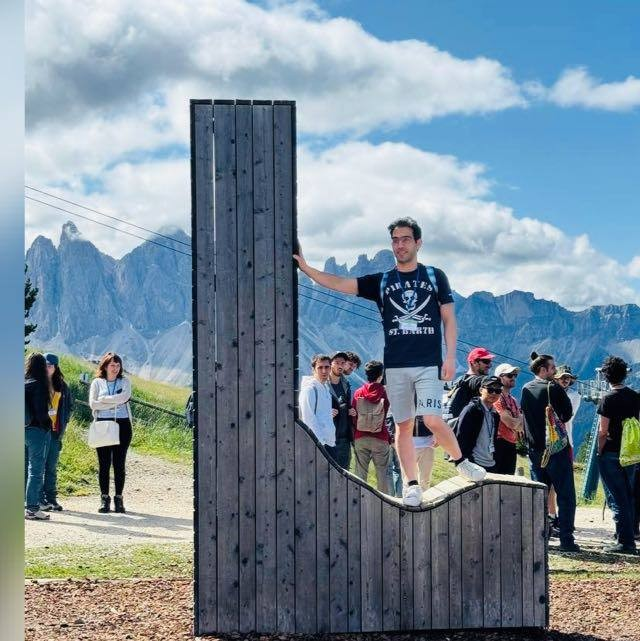

Azim Akhtarshenas
PhD Candidate in Electrical Engineering and Communication Networks
Universitat Politècnica de València (UPV) · iTEAM Research Institute · Valencia, Spain
I am a final-year PhD candidate in Electrical Engineering and Communication Networks at the Universitat Politècnica de València (UPV), working at the iTEAM Research Institute under the supervision of Prof. David López-Pérez.
My PhD develops deep reinforcement learning (PPO, TD3) for positioning and trajectory optimization of UAV and HAPS base stations, including a GPS-free, radio-sensing framework that coordinates multiple UAV base stations in disaster-response networks — where GPS and terrestrial infrastructure may be unavailable — using only angle-of-arrival and signal-quality measurements from the ground users it serves. This centers on autonomous decision-making under uncertainty: agents that learn continuous control policies over 3D positioning and trajectories, and that coordinate as a team rather than act independently, so a fleet of UAV-BSs can maintain coverage as conditions change in real time. More broadly, I work across artificial intelligence and machine learning (federated learning, autoencoders, large language models) and wireless communications (MIMO, 5G/6G, SINR estimation), and I'm increasingly drawn to taking reinforcement learning out of simulation and into real autonomous systems.
Research at a glance
Non-Terrestrial Networks
- UAV base stations
- HAPS
- Terrestrial/NTN integration
- Disaster response
- Maritime networks
Deep Reinforcement Learning
- PPO
- TD3
- Trajectory optimization
- Positioning
- Autonomous decision-making
- Continuous control
- Multi-agent coordination
AI & Machine Learning
- Federated Learning
- CNN Autoencoders
- Large Language Models
- Data valuation
Wireless Communications
- MIMO
- 5G/6G
- SINR estimation
- SSB / CSI-RS